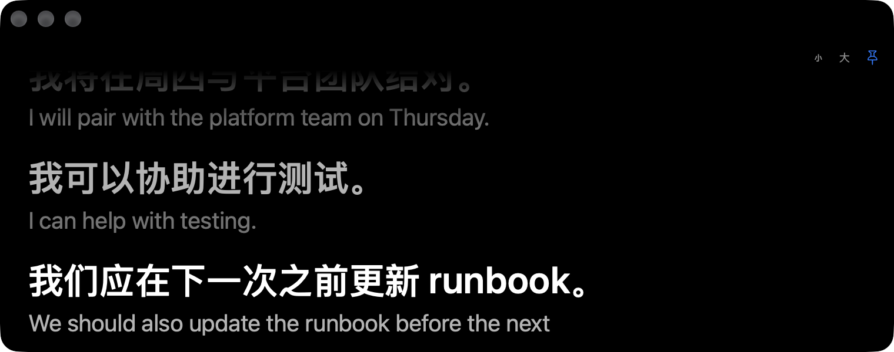

Uptitle
听到的每句话，
都在刘海下。
开会、看视频、听讲座，字幕和译文实时出现在刘海下方。听错的词，AI 会改回来；会开完，它再认真听一遍；会上说过什么，直接问它。语音识别和 AI 都在你的 Mac 上运行。
0.2秒说到一半，先出预览译文
1.4秒说完一句，换上准确译文1
演示：MacBook 刘海下方实时显示英文会议的中文译文和英文原文；往下滚动，依次演示 AI 纠错、两种识别引擎、会后重新识别、向这场会提问，以及词本和只显示英文、给生词注上中文的字幕。
Uptitle
开会、看视频、听讲座，字幕和译文实时出现在刘海下方。听错的词，AI 会改回来；会开完，它再认真听一遍；会上说过什么，直接问它。语音识别和 AI 都在你的 Mac 上运行。
AI 纠错
每句话识别完，AI 参考前几句和你的专有名词表，改正听错的词。只采纳读音、拼写相近的修改；想加词、改说法，或者换成读音不像的词，一律拦下，字幕保持原样。
实时识别
默认用苹果语音识别。说英语时可以换成 NVIDIA 开源的 Nemotron，它在神经网络引擎上运行，只占约 130 MB 内存。同一句话，点一下对比。
会后重新识别
会一结束，Qwen3-ASR 在本机把录音从头再识别一遍，换上准确得多的逐字稿，再重新纠错、翻译、区分说话人、写笔记。往下滚，看它一行行改过来。
问这场会
AI 只根据这场的逐字稿回答，每句后面标出原话的时间，点一下就从那里播放。找不到依据，它就直说没找到。
词本
英文会议开完，会上的短语、术语和生词收进词本，说得越多排得越前。每条都配着会上的原句和录音，解释先用英文，中文点了才显示。字幕也能只显示英文，没掌握的词下面注上中文。
更多功能
会后在本机分析录音，给每句话标上说话人。填上名字，逐字稿和导出马上用新名字。
摘要、要点、待办和待解决的问题。
处理完一段 1 分钟的会议视频，纠错、翻译、说话人和笔记一次出齐。1
想到什么，按一下说出来，再按一下结束。录音和文字一起存进历史记录。
在任何能打字的地方，按住说话，松开就打出来。
能拖动、随意调大小的黑底大字窗口，字号随手调，可以一直浮在最前面。

打开后，共享屏幕时别人看不到刘海字幕，系统截图里也没有；大字幕窗口照常可见。有的录屏和会议软件仍能拍到，要稳妥就只共享某个窗口，或只共享没有刘海字幕的那块屏幕。
语言和地区，中文、粤语、英语、日语、韩语都在里面；可以翻译成 25 种语言。2
隐私
实时识别和会后重新识别都在本机，声音不上传；选本地模型时，纠错、翻译、笔记、问答和词本也在本机完成。
直接听 Mac 的声音，不加入会议，也不改会议设置。会议软件、浏览器、播放器都能用。
第一次用到时下载，之后离线可用，用完自动释放内存。
录音、字幕和笔记都存在你的电脑上，删除记录时录音一起删除。选用 Claude 时只发送文字。
用到哪个下载哪个。开字幕时约占 4 GB 内存，会后重新识别约 5 GB，用完自动释放。
价格
第一次安装，会员功能免费试用 14 天，不用填付款信息。
免费版的全部功能，加上：
一个许可证可以在 3 台 Mac 上使用。买断和年度会员的首次付款，14 天内可以无理由退款。选用 Claude 作引擎时，API 费用由 Anthropic 按用量另收。